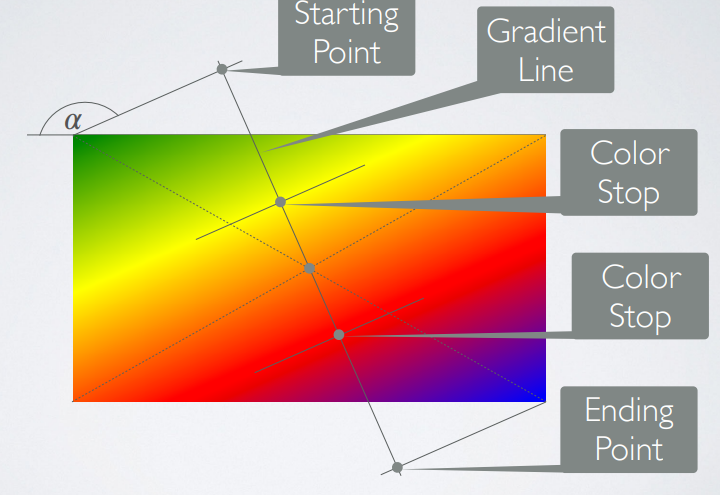
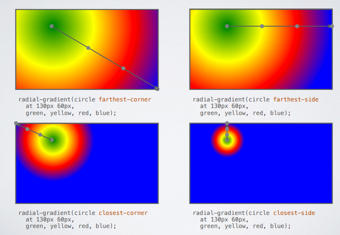

Cheat Sheet CSS
CSS
Syntax
Selectors point to the element to style. The declaration block contains one or more declarations (seperated by a ";"). Each declaration includes a CSS property name and a value, separated by a colon. Multiple CSS declarations are separated with semicolons, and declaration blocks are surrounded by curly braces.
Selectors
Used to find or select elements to style. Can be divided into:
- Simple selectors (based on name, id, class)
- Combinator selectors (based on specific relationship
- Pseudo-class selectors (based on certain state)
- Pseudo-element selectors (select and style a part)
- Attribute selectors (based on attribute and attribute values)
The element selectors select based on name.
The id selectors select based on id attribute. IDs are unique so it is used to select an unique element.
The class selector selects HTML elements with a specific class attribute.
The universal selector selects all elements.
The grouping selector selects all elements with the same style.
Color
Can be selected with names or values (for example rbg or hex code). You can edit the color of text, background and borders.
Backgrounds
You can color the background of specific elements. You can also change the opacity.
div {
background-color: green;
opacity: 0.3;
}
The background-image property specifies an image to use as the background of an element.
body {
background-image: url("paper.gif");
}
By default, the background-image property repeats an image both horizontally and vertically.
body {
background-image: url("gradient_bg.png");
}
If the image above is repeated only horizontally (background-repeat: repeat-x;), the background will look better:
body {
background-image: url("gradient_bg.png");
background-repeat: repeat-x;
}
This can also be done with no-repeat and y.
Text
Css has a lot of things that can be changed in text, for example the color of the text itself or the background color of the text.
The text-align property is used to set the horizontal alignment of a text. A text can be left or right aligned, centered, or justified.
The text-align-last property specifies how to align the last line of a text.
h1 {
text-align: center;
}
h2 {
text-align: left;
}
h3 {
text-align: right;
}
The direction and unicode-bidi properties can be used to change the text direction of an element.
The vertical-align property sets the vertical alignment of an element.
The vertical-align property sets the vertical alignment of an element.
The text-decoration-line property is used to add a decoration line to text.
h1 {
text-decoration-line: overline;
}
h2 {
text-decoration-line: line-through;
}
h3 {
text-decoration-line: underline;
}
p {
text-decoration-line: overline underline;
}
The text-decoration-color property is used to set the color of the decoration line.
The text-decoration-style property is used to set the style of the decoration line.
The text-decoration-thickness property is used to set the thickness of the decoration line.
The text-decoration property is a shorthand property for:
text-decoration-line (required)
text-decoration-color (optional)
text-decoration-style (optional)
text-decoration-thickness (optional)
The text-transform property is used to specify uppercase and lowercase letters in a text. It can be used to turn everything into uppercase or lowercase letters, or capitalize the first letter of each word.
p.uppercase {
text-transform: uppercase;
}
p.lowercase {
text-transform: lowercase;
}
p.capitalize {
text-transform: capitalize;
}
There's also alot to be done with spacing.
p {
text-indent: 50px;
letter-spacing: 5px;
line-height: 0.8;
word-spacing: 10px;
white-space: nowrap;
}
The above is pretty self-explanatory.
Fonts
Font can be very important. The most generic font families are:
- Serif
- Sans-Serif
- Monospace
- Cursive
- Fantasy
The font family property can be used to specify the font of a text. Multiple fonts can be used in the font family. Should hold several names as a fallback.
Web Safe fonts are fonts that most browsers and devices have.
font-style:
p.normal {
font-style: normal;
}
p.italic {
font-style: italic;
}
p.oblique {
font-style: oblique;
}
Also specify weight with "font-weight".
The font-variant property specifies if a text should be displayed in a small-caps font.
For example small-caps font, which turns all letters into caps but with the heigh of lowercase letters.
With font-size you can control size.
In monospace every character is the same size.
When choosing fonts, many things are important:
1. Complement
Choose fonts that harmonize (not too similar or different).
2. Use font superfamilies
Font superfamilies are fonts designed to work together, so its safe to use them.
3. Contrast is king
Two fonts that are too similar will often conflict. However, contrasts, done the right way, brings out the best in each font.
4. Choose only one boss
Only one font should be boss, establishing an hierarchy for the fonts used.
There also exists the property "font" which is a combination of many others:
font-style
font-variant
font-weight
font-size/line-height
font-family
Links
Links can be styled with any CSS property (e.g. color, font-family, background, etc.). They can also be edited depending on the state of one.
Text deco can be used to remove underline.
Background color can also be configured.
Four states: link, visited, hover, active
Combinators
A CSS selector can contain more than one simple selector. Between the simple selectors, we can include a combinator.
| Name | Symbol | Explanation |
|---|---|---|
| descendant selector | (space) | The descendant selector matches all descendants of the element. |
| child selector | > | Child selectors selects elements that are children of the specified one. |
| adjacent sibling selector | + | The adjacent sibling selector is used to select an element that is directly after another specific element. |
| general sibling selector | ~ | The general sibling selector selects all the next siblings. |
Sibling means the same parent, and adjacent means immediately following.
Pseudo-classes
Used for a special state of an element. They can be combined with HTML classes.
Syntax:
selector:pseudo-class {
property: value;
}
/* unvisited link */
a:link {
color: #FF0000;
}
/* visited link */
a:visited {
color: #00FF00;
}
/* mouse over link */
a:hover {
color: #FF00FF;
}
/* selected link */
a:active {
color: #0000FF;
}
An example of using the :hover pseudo-class on a <div> element:
div:hover {
background-color: blue;
}
In the following example, the selector matches the first <i> element in all <p> elements:
p i:first-child {
color: blue;
}
In the following example, the selector matches all <i> elements in <p> elements that are the first child of another element:
p:first-child i {
color: blue;
}
CSS for lists
| CSS syntax | Explanation |
|---|---|
| list-style-type | Sets the marker (such as a disc, character, or custom counter style) of a list item element. |
| list-style-image | Sets an image to be used as the list item marker. |
| list-style-position | Sets the position of the ::marker relative to a list item. |
CSS for table cells
| CSS Syntax | Explanation |
|---|---|
| border: | Size of the border and color |
| width: | How much of the screen (percentages) the table takes up. |
| border-radius | Rounded corners with specified size |
| border-collapse | whether cells inside a <table> have shared or separate borders (seperate or collapse). |
| border-spacing | Sets the space between different cells. |
| border-style | Sets the line style for all four sides of an element's border. |
| border-width | Sets the width of the border on every side. |
IDs and Classes
CSS Rules
Contain selectors, contain declarations, contain a property and contain a value
CSS Classes
Differentiate two of the same element for example.
Classes are used to make an HTML element addressable from internal/external CSS.
These elements may appear more than once in a page.
Classes are used with an ".".
IDs
Used with an "#".
Make a Html element addressable from an internal/external Css
The Html element may appear only once on the page
When using an ID or Class you don't have to specify the element, you can just use .(class) or #(id).
Block and Inline elements
Blocks take an extra line.
Examples for block: article, section, p, hl -6, div
Inline elements are in the "normal" text flow.
Examples: img, strong, em, img, span
You can edit the amount of distance to next elements with border, padding and margin
Example:
border: 20px solid grey;
padding: 100px;
margin: 100px;
Inline elements only move left and right.
All elements are in a "text flow"
Which means they come after each other
This may not be desirable, which we use float for
Example:
<img src=”…” alt=”…”/>
<table>
…
<td>e-mail</td>…
</table>
img {float: right;}
Navigation as ul
li elements float left
Any content after this would ignore the li’s
section { clear: left }
The clear CSS property sets whether an element must be moved below (cleared) floating elements that precede it.
Debugging
Looking at elements the way in which the browser sees it.
This is done by inspecting the element in the browser itself.
Margins, borders and padding.

All of these control the distance from one element to another in HTML.
The margin can be edited with:
margin-top
margin-right
margin-bottom
margin-left
Top and bottom margin don't work with inline elements.
The type (inline, block) can be controlled with the "display" command in css.
3 Kinds: inline, block and inline-block elements.
Gradients
How to make a gradient:
#gradientbox {
background-image:
linear-gradient(to right, red, orange, yellow, green, blue, indigo, violet);
}
'linear-gradient' defines that the background image will be a gradient.
'to right' defines the direction of the gradient.
After are the colors of the gradient.

to (left | right)
'|' means or
You can also set it do a specific angle (using the unit 'deg')
the color percentage comes after the color, and it's referring to the percentage along the gradient line where a particular color is applied.
Radial Gradients
radial-gradient(ellipse, red, green, blue);
'ellipse' specifies the shape of the gradient. This may also be something such as 'circle'.
You can also change the origin of the radial gradient:
radial-gradient(circle at 130px (from the left side) 60px (from the top)....);

Round corners using: border-radius: 1(unit);
Elements can have shadows using the command: box-shadow: 10px 20px 5px #888888
The first unit describes the horizontal offset, the second the vertical and the last the blur distance. The last rule changes the color.
Transitions
Purpose of transitions are:
- Changes shouldn't happen immediately
- Changes should be animated
'transition-property': which element should be affected?
'transition-duration': how long should the transition last?
'transition-timing-function property describes how the intermediate values used during a transition will be calculated
'transition-delay' when the transition should start.
'transition' can be used as a shorthand property.
Animations
Reasons for animation:
- Intermediate color values required
- Animation should start over after finishing
- Bouncing effects
animation-name: rainbow; (Refers to specific keyframe)
animation-duration: (specifies how long an animation should last)
animation-iteration-count: infinite; (how often to start over)
'animation-direction':
- Reverse
- Normal
- Alternate (changes between normal and reverse)
- Alternate-reverse
@keyframes rainbow {
0% { background-color: red; }
50% { background-color: yellow; }
75% { background-color: blue; }
100% { background-color: green; }
}
Transformations
'transform':
- Scale
- Rotate
- Translate (repositions an element in the horizontal and/or
- Skew
Positioning
Static: Element appears in text flow
Fixed: Relative to the browser window
Relative: relative to its normal position
Absolute: relative to its first parent element which position is not static
Keyframes
The @keyframes rule specifies the animation code.
The animation is created by gradually changing from one set of CSS styles to another.
During the animation, you can change the set of CSS styles many times.
Specify when the style change will happen in percent, or with the keywords "from" and "to", which is the same as 0% and 100%. 0% is the beginning of the animation, 100% is when the animation is complete.
Example:
@keyframes mymove {
0% {top: 0px;}
25% {top: 200px;}
50% {top: 100px;}
75% {top: 200px;}
100% {top: 0px;}
}
Usage: animation: mymove 5s infinite;
Change things such as:
- animation-duration
- animation-iteration-count: how many times animation repeats.
- animation-direction
- normal - The animation is played as normal (forwards). This is default
- reverse - The animation is played in reverse direction (backwards)
- alternate - The animation is played forwards first, then backwards
- alternate-reverse - The animation is played backwards first, then forwards
- animation-timing-function
- ease - Specifies an animation with a slow start, then fast, then end slowly (this is default)
- linear - Specifies an animation with the same speed from start to end
- ease-in - Specifies an animation with a slow start
- ease-out - Specifies an animation with a slow end
- ease-in-out - Specifies an animation with a slow start and end
- cubic-bezier(n,n,n,n) - Lets you define your own values in a cubic-bezier function
- animation-fill-mode
- none - Default value. Animation will not apply any styles to the element before or after it is executing
- forwards - The element will retain the style values that is set by the last keyframe (depends on animation-direction and animation-iteration-count)
- backwards - The element will get the style values that is set by the first keyframe (depends on animation-direction), and retain this during the animation-delay period
- both - The animation will follow the rules for both forwards and backwards, extending the animation properties in both directions
- animation-play-state: Paused or running
- animation-timing-function: Specifies the speed curve of the animation
Flexbox
Flex first needs a flex box, a div with display:flex for example.
| CSS syntax | Explanation |
| flex-direction | Specifies the direction of the main axis. Values: row, row-reverse, column, column-reverse. |
| flex-wrap | Specifies whether the flex items should wrap if there is no space along the main axis. Values: nowrap, wrap, wrap-reverse. |
| flex-flow | Shorthand for flex-direction and flex-wrap. Example: flex-flow: row wrap. |
| justify-content | Specifies how flex items are distributed along the main axis. Values: flex-start, flex-end, center, space-between, space-around, space-evenly. |
| align-items | Specifies how flex items are aligned along the cross axis when they do not take up all available space. Values: stretch, flex-start, flex-end, center, baseline. |
| align-content | Specifies how multiple lines are aligned along the cross axis. Values: stretch, flex-start, flex-end, center, space-between, space-around. |
| gap | Specifies the size of the gap between flex items. Only supported in CSS Grid and CSS Flexbox. Example: gap: 10px; |